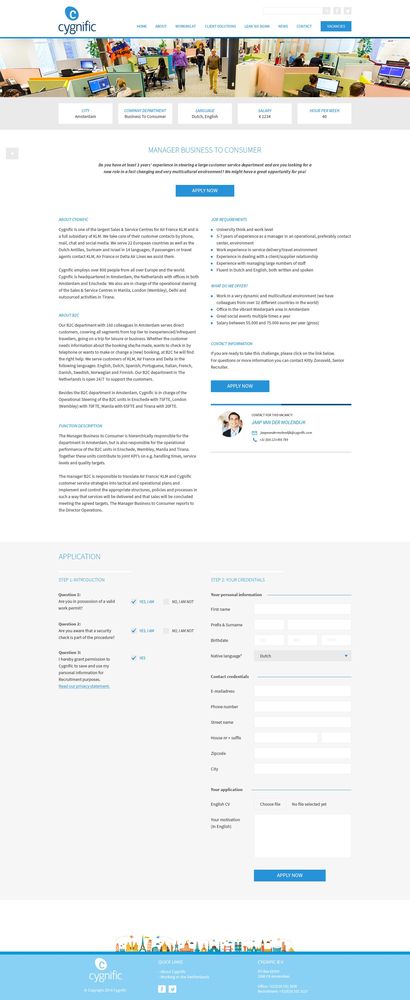
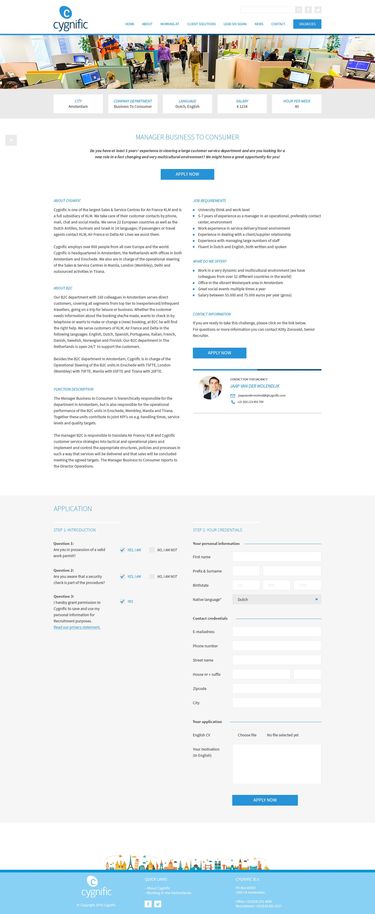

Werkervaring
1Manager Digital Development - Gemini Design
06-2017 tot heden - Overzien van workflow, opzetten en optimaliseren richtlijnen, adviseren technische vraagstukken en zorgen dat iedereen zijn werk goed kan doen. Hooghouden van- en toezien op kwaliteit en projecten in goede banen leiden. Training en coaching werknemers.
2Senior (digital) designer + front-end developer - Gemini Design
06-2012 tot heden -Vanaf begin betrokken bij het opzetten van de online afdeling binnen Gemini Design. Van vormgever (digitaal & print) uitgegroeid naar een allround professional: (digitaal) ontwerp, UX/UI, font-end ontwikkeling en alles wat nodig was.
3Game Master & (Web)designer - Game Entertainment Europe
07-2010 tot 06-2012 - Ontwerpen en ontwikkeling van community- en bedrijfswebsites, community management voor online free-to-play games en bijdragen aan creatieve strategie.
4Owner & general manager - Uniqs
10-2009 tot 06-2017 - Nieuwe business zoeken, projectmanagement, webdesign en -ontwikkeling, CMS integraties, aftersale en onderhoud. Eigen bedrijf, opgeheven om volledig in te kunnen zetten voor huidige werkgever.
Scholing en varia
5Interactieve Media
2006 tot 2010 - Hogeschool van Amsterdam, tegenwoordig Communicatie & Multimedia Design.
Afstudeerscriptie - "Lords Online en usability". Registratie- en loginoptimalisatie d.m.v. UX/UI & nieuwe technieken
6HAVO
2000 tot 2005 - Niftarlake College, Maarssen
Trainingen / cursussen / congressen
- CSS-Day - 2018 - Amsterdam
- DISC training- 02/2018 - Van Eijden HR Consult en Coaching
- GIT training- 2017 - Gemini intern
- Smashing conference - 2016 - Barcelona
- CSS-Day - 2016 - Amsterdam
- Awwwards conference - 2016 - Amsterdam
Vaardigheden en competenties
Technische vaardigheden, programma’s en talen
Digitaal ontwerp, conceptmatig denken, prototyping, UX/UI, grafisch ontwerp (ook print), brand identity, interactie ontwerp, inzetten nieuwe media, gebruiksvriendelijke en bruikbare interface. Daarnaast ook ervaring in operations management en scholing/training.
Photoshop, InDesign, Illustrator, Adobe XD, alle browsers (liefst Chrome), diverse code-editors, CodeKit, MS Office, MacOSX, Windows.
HTML, (S)CSS, Javascript, jQuery, PHP (basis), Wordpress, GIT.
Eigenschappen
Ik ben altijd ontwikkelend, perfectionistisch, analytisch, systematisch, met oog voor detail en graag hard aan het werk met collega's of alleen. Ik denk graag in problemen en hoe je die het beste kan oplossen. Daarnaast ben ik betrouwbaar, zeer loyaal en flexibel.
Mijn moedertaal is Nederlands, maar ik spreek vloeiend Engels en ben gewend in een internationaal team te werken.
In bezit van rijbewijs B en eigen vervoer.
Interesses, hobby’s en nevenactiviteiten
In mijn vrije tijd hou ik van gamen, films en series kijken, varen, sporten, mooie reizen
maken en nieuwe plekken ontdekken.
Buiten werk om hou ik mij ook bezig met websites voor vrienden & kennissen,
geluidstechniek in de kerk en kan ik erg genieten van interactieve media in musea en
tentoonstellingen.
Brands
Met deze brands heb ik mogen samenwerken en mooie projecten mee kunnen maken:

Nespresso Nederland
Nederveen Tuinen
Cygnific
Dura Vermeer
Een preview-versie van dit project is hier te bekijken:
Bekijk projectBasisschool de Evenaar
Malu
Pulsum accountants & adviseurs
Print - Diverse
 
